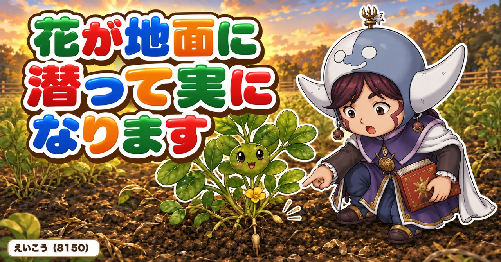
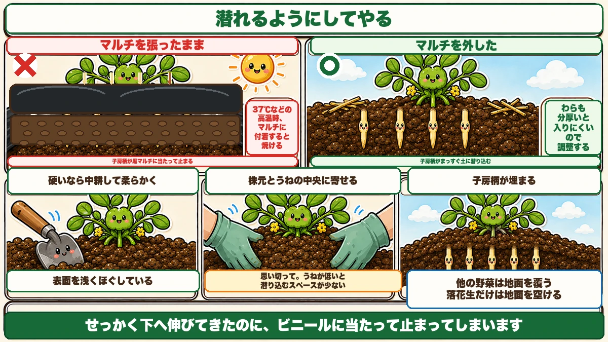
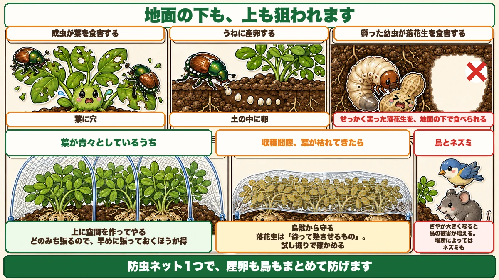
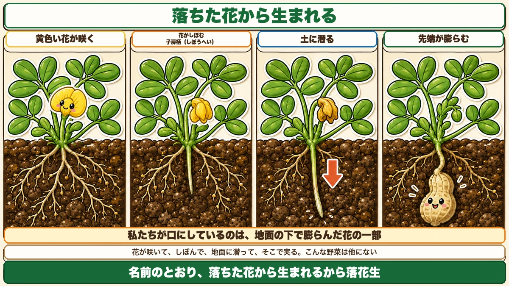

落花生の栽培手帳｜種まき・花後の管理・試し掘りの判断

どうも、8150（えいこう）です🌱 家庭菜園歴8年、理科の教員免許を持っていて、有機・無農薬で野菜を育てています。
📖 この記事の目次
この記事で分かること
- 種まきは暖かさを確かめてから。暦だけで急がず、地域と品種に合う予定を立てます。
- 花のあとに伸びる子房柄が土へ届くよう、覆い・草・土の硬さを整えます。
- 花後の乾燥には水を補いますが、雨で湿っている土に追加し続ける必要はありません。
- 追肥の有無は、最初の肥料と現在の育ち方で決めます。葉が大きいだけで豊作とは判断できません。
- 葉の黄ばみは収穫の合図にも病気の症状にもなるため、株元とさやを見て判断します。
- 掘る日を日数で絞り、試し掘りで網目を確認。収穫後は『茹でて食べる』『乾かす』『種を残す』を分けます。
落花生は、地上の葉を育てながら、地下に実を作る野菜です。見える部分が元気でも、土の中まで順調とは限らないんですよね。だから栽培の途中では、葉だけでなく『地面へ向かう柄』と『その柄が入る場所』を見てください。
このページでは、種まきから秋の収穫、その後の乾燥までを順にまとめます。まだ種を買う前なら早見から、花が咲いているなら花後の手順から、掘るか迷っているなら収穫の項目から読めば大丈夫です☺️
とくに覚えておきたいのは、土の状態です。表面が硬い、覆いが残っている、草を引き抜いて柄を切ってしまう。こうしたことは、肥料を足しても解決しません。『育つ力が足りないのか』『実を作る場所がないのか』を分けると、今やる作業が選びやすくなります。
水やりや追肥には、回数の違う説明があります。このページでは一つにまとめず、雨の有無、土の乾き、元肥、生育段階を添えて紹介します。みなさんの畑に当てはめるときは、回数よりも先に条件を見てください。落花生の都合に合わせて選ぶ、という感じです🥜
早見：落花生の育て方（ひと目で分かる数字）
予定を立てるための目安
- 種まきの時期：4月下旬〜5月上旬にまく説明と、5〜6月、なかでも5月中旬〜下旬を勧める説明があります。地域や品種などの条件がそろっていないため、全国共通の適期にはしません。
- 地温の目安：発芽に向く温度として20℃前後、20〜25℃という説明があります。気温と地温は別なので、天気予報の最高気温だけで種まきを決めないようにします。
- 苗の植え時：5月に植える説明があります。ただし、地域別の厳密な植え付け暦は一律に示せません。購入苗の表示と、その地域の適期を確認してください。
- 株間：30cm以上を確保する説明があり、広がる大粒タイプでは40cmという例もあります。30cmでどの品種も収まる、という意味ではありません。
- うね幅・列の間隔：うね幅70cm、95cmという栽培例や、列の間隔を60cmにする例があります。うねの幅と列間は違う数字。品種と植え方をそろえて使います。
- 種の深さ：約1cmの例と、2〜3cm、約3cmの例があります。違う説明の平均を取らず、種袋の指示と採用する方法を確かめます。
- 一か所にまく粒数：1粒、2粒、3粒という例があります。粒数だけを増やすのでなく、最終的に残す株の広がりも考えます。
- 土の酸度：pH6.0〜6.5という目安があります。調整が必要かは土を調べて決めます。すでに整えた土へ、同じ資材を重ねて入れる前に履歴を見ます。
- 元肥：肥料が残る畑と、元肥を入れずに始める栽培では条件が違います。どの畑にも同じ量を入れるのでなく、土の条件から決めます。
- 追肥：行わない、1回、2回の説明があります。行う例には種まきから約1か月の時期があり、元肥が多く生育が強いなら省く判断もあります。
- 花後の水やり：乾いているときに10日に1回程度とする説明と、週1回、まったく雨がないときは3日に1回程度とする説明があります。雨で土が湿っている場合まで固定日程で与えません。
- 収穫までの日数：種まきから130〜135日、開花期から75〜95日という目安があります。起点が違うので、同じ日数表として足し合わせないでください。
- 試し掘り：収穫予定の約10日前、または5日〜1週間前という説明があります。葉の状態も見て、確認を始める時期として使います。
- さやの成熟：網目が明瞭なさやが約80％、または80％以上になったころを本収穫の判断に使う説明があります。葉の色だけで決めず、掘ったものを見ます。
- 収穫する季節：9〜10月の説明と、11月上旬までを含む説明があります。品種とその年の生育で前後します。
- 連作の間隔：3〜4年あけるという説明があります。病気が出た場所を、その年数さえ過ぎれば安全と判断するための数字ではありません。
日付を残すと、秋に迷いにくい
予定表には『種をまいた日』『花を初めて見た日』『株全体で花が増えたころ』を別々に残しておきます。収穫の目安に使う開花期は、一輪でも咲いた株が全体の40〜50％ほどになったころ、という説明です。最初の一輪を見つけた日と、畑全体の開花期は同じとは限りません。
家庭菜園の少数株では、割合を厳密に出しにくい場合もあります。無理に一日を正解にせず、咲き始めから花が増えた時期をメモしてください。日数は、試し掘りを始める見当をつけるために使います。最後はさやを見るので、日付が少しあいまいでも、そこで確認できます。
初期に地面を覆ったかどうかも残すと役立ちます。最初からマルチなしの栽培が7〜10日ほど遅れるという説明がありますが、花後に外した日を起点に、その日数を必ず上乗せする話ではありません。『使い始めと外した時期』の両方を記録しておくと、翌年に比べやすくなります。
- 品種名と、地域に合う種まき時期を確認した
- 株間・うね幅・列間を区別して決めた
- 肥料を入れた日と、入れなかったことも記録した
- 花が増えたころをメモした
- 収穫予定日を確定日ではなく、確認を始める目安にした
数字は便利ですが、数字だけ持って畑へ行くと「今日の土はどうなん？」が抜けやすくなります。早見で予定を組み、畑では草、湿り、柄、株元を確認する。この二つを組み合わせて進めましょう。
作業の手順（時期の順）
1．食べ方と栽培場所を決める
- 『掘りたてを茹でて食べる』『乾かして煎り豆にする』『翌年の種も残す』のどれを目指すか決めます。
- 品種の表示で、粒の大きさだけでなく、株が横へ広がる性質と適期を確認します。
- 株間に加え、土寄せをする場所、株の外側に伸びる柄が入る場所、作業する通路を確保します。
- 前作と病気の履歴を調べ、同じ場所へ続けて植える計画を見直します。
大粒なら食べ応えがありそうですよね。ただ、実だけが大きくなるとは限りません。株の広がりまで考えて場所を取る必要があります。狭い場所で育てるなら、品種の性質を確認してから株数を決めてください。空いているところに詰めるより、収穫まで使う面積を先に押さえるほうが段取りを組みやすくなります。
ここで決める食べ方は、収穫後の作業にもつながります。茹でるものと、乾かすものを全部同じ山にすると、あとで選び直すことになります。種用も残すなら、収穫のときに分けられるようにしておきましょう。
2．土を整え、肥料の履歴を確認する
- 雨のあとに水が残る場所と、水の逃げ道を確認します。
- 土の表面が硬くなる場所や、雑草が多いところを見て、植える前に整えます。
- 土の酸度を調べ、前作で入れた肥料も確認します。
- 元肥を入れるか決め、後から分かるように内容を記録します。
落花生は、子房柄を土へ入れてさやを作ります。根が張れるだけでなく、地表から先端が入り込める土が必要です。雨のたびに水がたまる場所なら、水を補うことより排水の確認を先にしてください。夏の乾燥対策と、雨の多い時期の対策は両方必要です。
『豆だから肥料は不要』『収穫する野菜だから多めに』という二択にはしません。肥料が残った畑を使うのか、元肥なしで始めるのかで出発点が違います。最初の条件が分からないまま、途中の追肥回数だけを真似すると、多く入れすぎることがあります。
3．暖かさを確かめて種をまく
- 種袋の地域別の適期と、畑の暖かさを確認します。
- 株が広がる位置を考えて、まく場所を決めます。
- 種袋と採用する方法に合わせて、粒数と深さを決めてまきます。
- 種まき場所を記録し、芽が出るまで鳥による被害がないか見ます。
種まきの深さは約1cmの例と2〜3cmの例があり、粒数も1〜3粒と分かれています。浅い例の深さと、別の例の粒数と、さらに別の例の水やりを組み合わせると、どの方法を試しているのか分からなくなります。一つの方法の条件をそろえて始めるほうが、うまくいかなかったときにも原因を考えやすいです。
芽を出してからまく方法もあります。ただし、浸す時間は6〜9時間と一晩で説明が違います。初挑戦なら、まず購入した種の扱い方を確認し、その方法を選んでください。芽出しをしたことだけで、その後の過湿や鳥害まで防げるわけではありません。
種まき段階で水を多くしすぎない注意と、夏に乾燥を防ぐ注意は、場面が違います。『水を切らさない』という言葉を、まいた直後からずっと水浸しにする意味で使わないようにしましょう。
4．開花前に草を減らす
- 株の周りと、枝が広がる先の草を早いうちに取ります。
- 土の硬さを確かめ、必要なら表面をほぐします。
- 花が咲き始めたら、草取りの方法を見直す準備をします。
- 開花の記録を始め、土へ向かう柄が出ていないか確認します。
落花生の草取りは、遅れるほど作業がしにくくなります。子房柄が地面に入ったあとでは、草の根といっしょに柄を引っ張るおそれがあるからです。草が大きくなってから一気に片づけるより、地面へ向かう柄が少ない時期に済ませておくほうが傷めずに進められます。
途中で草が大きくなったら、勢いよく抜く前に根元を見てください。子房柄が近くにある場所は、草の地上部を切るなど、引き抜かずに処理する方法を選びます。これは草を処理する話で、落花生の柄を切る話ではありません。残したいものを確かめてから手を入れます。
5．花後は、地面へ届く道を空ける
- 黄色い花のあとに、付け根から細い柄が下向きに伸びていないか見ます。
- 初期にマルチを使った場合は、柄が入り込む前に取り除き、土を出します。
- 敷きわらが厚く重なっている場所は、柄が通れるように調整します。
- 乾燥への備えも残しながら、土まで到達できる場所があるか確かめます。

初期のマルチには、地温や雑草管理のために使う考え方があります。花後になると、その覆いが子房柄の進路をふさぐことがあります。同じ畑でも、生育段階が変われば必要な作業が変わるんですよね。春から使っているから秋までそのまま、にはしません。
子房柄が出たあとで覆いを乱暴に引くと、絡んだ柄を傷めるおそれがあります。外す予定を花の時期に入れておくと、後から株の下を探して慌てずに済みます。『花を見たら地面も見る』とセットにしておきましょう。
わらは、乾燥を和らげるために利用する説明もあります。わらの有無だけで判断せず、厚い層で柄が止まっていないかを見ます。どこも同じ厚さにそろえるより、柄が伸びる位置で土へ入れる状態か確認するのが先です。
6．土を寄せ、柄を傷めずに実る場所を作る
- 柄が伸びる位置と、すでに土へ入っている位置を確認します。
- 表面が硬い場所は、根や柄を傷めない範囲で浅くほぐします。
- 株元や土が少ない部分へ、柔らかな土を寄せます。
- 寄せたあとに、柄が無理に引っ張られたり、さやが露出したりしていないか見ます。
土寄せは、周囲の土を株のほうへ移す作業です。土が少ない低いうねでは、茎が埋まるほど寄せる説明もあります。ただし、どの畑でも株全体を深く埋める指定ではありません。足りない場所に土を補い、子房柄の先端が実る場所を作る作業として考えます。
『柔らかくしよう』と深く掘り返すのも避けたいところです。すでに柄が入った場所には、さやが育っている可能性があります。見えないところを鍬で切ってしまうと、土の硬さは直せても、実のつながりを失ってしまいます。耕す範囲と寄せる範囲を分け、株の近くを勢いで掘らないでください。
風で土が飛んだり、枝が通路へ広がったりすると、育ちかけのさやが見えることもあります。その場合は露出したところを土で覆います。収穫が近いからといって放置せず、逆に全体を耕し直す作業にもせず、その場所に対応します。
7．追肥は草勢を見て選ぶ
- 元肥を入れたか、前作の肥料が残りそうかを記録で確認します。
- 葉と茎の伸び方を見て、すでに旺盛に育っていないか調べます。
- 肥料不足だけでなく、水分、病気、柄が届く距離も確認します。
- 追肥をする場合は、選んだ方法と資材の表示に従い、土寄せの作業と合わせられるか考えます。
追肥の説明には、なし、1回、2回があります。生育が弱い年に回数を増やした例もあり、毎年必ず同じ回数という話ではありません。元肥が多く、すでに強く育っている株なら、追肥を省く判断があります。
葉が茂っているのに実が少ないと、つい追加したくなります。でも、窒素を与えすぎると葉や茎の成長に偏り、実のつきが悪くなることがあります。『大きくすれば解決』は、ここでは通用しにくいんです。柄が地面まで届くか、土に入り込めるかもいっしょに確認しましょう。
土寄せと同じ日にできるのは、追肥が必要なときの作業上の便利さです。土を寄せるたびに肥料も追加する、という決まりにはしません。
8．夏の乾きと、雨後の湿りを分けて管理する
- 花後は株の下だけでなく、柄が入るうねの表面を見ます。
- 雨の記録と土の湿りを確かめ、乾燥が続いているなら水を補います。
- 与えるときは朝夕の涼しい時間帯を選びます。
- 雨が多く土が湿っているなら、追加の水を控え、水が逃げる状態か確認します。
子房柄が育ち、さやが大きくなる時期には水が必要です。開花期から20日以降に乾燥を見て水を補う説明があり、45日前後の肥大期を重視する説明もあります。花が終わったように見えても、地面の下では実を育てる作業が続いています。
回数は、10日に1回程度という説明も、雨がないと3日に1回程度という説明もあります。違いを平均して『何日に一回』と決めないでください。雨、乾き方、同じ場所の水はけを見て選びます。水を与えた日だけでなく、雨が降った日も残すと判断しやすくなります。
うねにいつも水が残るなら、乾燥対策を優先して水を足す場面ではありません。過湿は白絹病などの病気が出やすい条件にもなります。乾かしすぎないことと、水をためないことは両立させます。
9．育っている間に、虫と鳥への備えをする
- 葉の食害を見て、コガネムシなどが来ていないか確認します。
- 防虫ネットを使う場合は、株の上に生育の空間を作ります。
- 地際に開いたところがないか、周囲の固定を確かめます。
- さやが育ってきたら、鳥の侵入や掘り返された跡も探します。

コガネムシは、成虫による葉の被害だけでなく、土へ産みつけた卵から育つ幼虫が、地下のさやを傷めることがあります。葉を食べられた分だけの問題、と考えないようにしてください。土の中へ入る前の対策を考える理由はここです。
葉がまだ青く伸びている間は、ネットをアーチ状にして空間を作る方法があります。収穫間際で生育が終わり、葉が枯れてきた段階には、直接覆う使い方もあります。葉が伸びている株へ、収穫直前と同じ掛け方をする必要はありません。
上を覆って安心しがちですが、周囲に隙間があれば入り口になります。設置後も確認を続けます。ネズミなどの獣まで同じ網だけで完全に防げるとは限らないので、被害が続くなら、相手と侵入位置を見直してください。
10．秋は、日数と株元で試し掘りの時期を絞る
- 種まき日と開花期の記録から、収穫候補の時期を出します。
- 下の葉の黄ばみや枯れ始めを確認します。
- 白い糸状のものや地際の腐敗がないか、株元も見ます。
- 収穫予定の5〜10日前を目安に、試し掘りでさやを確認します。
葉が黄色いから今日収穫、と即決はしません。成熟に伴う変化なのか、白絹病などで枯れ始めたのかを分ける必要があります。日数が近いこと、葉が変化していること、株元に不調がないことを合わせて確認してください。
試し掘りでは、実際に土の中のさやを見ます。収穫した一株を植え戻せば元どおりに育つ、とは考えず、確認用に掘る株として選びます。未熟なものが多ければ、畑に残した株の収穫を待つ判断になります。
11．網目を確かめて本収穫へ進む
- 掘ったさやを一つだけでなく、いくつか並べて見ます。
- 表面の網目が明瞭なものと、まだぼんやりしたものを見比べます。
- 明瞭な網目のさやが約80％を占める目安と照らし合わせ、本収穫を決めます。
- 掘り終えた場所を確認し、付け根が切れて土に残ったさやを拾います。
早く掘れば未熟なさやが多く、遅くなるとさやのつながりが切れて土中へ残りやすくなります。待てば待つほど全部よくなる、という野菜ではありません。日付で候補を絞って、さやで決める二段階にすると、早掘りと待ちすぎの両方を避けやすくなります。
家庭の少数株で、80％を厳密に計算するための抽出方法までは決まっていません。よいさや一つだけを選んで『もう全部できた』とするのでなく、掘った株の全体として成熟が進んでいるかを見ます。割合は、その見方を助ける目安です。
12．収穫後は、用途で作業を分ける
- 茹でて食べる分、乾燥する分、翌年の種に残す分を分けます。
- 茹で豆向けは収穫後にさやを外し、乾かす工程と区別します。
- 乾燥するものは土を落とし、株を離して風が通る状態にします。
- 雨や蒸れ、カビを確認しながら乾燥を進めます。
株を逆さにして畑で1週間〜10日乾かし、その後にさやを外し、さらに約1か月置く方法があります。少量なら収穫直後にさやを外して乾かす方法もあります。どちらも、日数を過ぎれば湿りやカビに関係なく保存できる、という保証ではありません。
畑で乾かす期間にも鳥の対策が必要です。ただ、栽培中に有効な覆い方が、乾燥中の風通しまでよくするとは限りません。乾かすときは、鳥を避けることと湿気を逃がすことを別々に確認します。
種として残すものは、食用に洗うものと扱いを分けます。種用を洗わずに残す説明があるため、まず用途を決めてから作業してください。保存期限や煎る温度は、このページで一律の数字にはしません。収穫後まで同じ手順で進めるより、『これは何に使う分？』と分けておくほうが迷いにくいです。
失敗の見分け方（症状→原因→やること）
芽が出ず、まいた場所が掘られている
- 症状：種まき場所に穴がある、種がなくなっている、出た芽が少ない。
- 考えられる原因：鳥に種を持ち去られた可能性があります。芽が出ないことだけなら、寒さや過湿なども分けて確認します。
- やること：種まき位置と被害跡を調べ、鳥への対策を見直します。種が残る場所では、日付、土の湿り、まいた深さを確認します。
見えないから全部腐った、と判断すると、まき直しても同じ被害に遭うことがあります。逆に、鳥が来たから全部鳥害とも限りません。まず、種がなくなったのか、残っているのに芽が出ないのかを分けます。
発芽までの日数や土の条件を確認せず、毎日掘り返して見続けるのも避けたいところです。確認する場所を決め、残した場所は余計に動かさず様子を見ます。何を疑っているのかが決まると、対策も絞れます。
花は多いのに、さやが少ない
- 症状：黄色い花は見られるのに、収穫時のさやが少ない。
- 考えられる原因：子房柄が土まで届かない、覆いで止まる、表面が硬い、除草で切れた、水切れで育ちにくかった可能性があります。
- やること：花の数だけでなく、柄の先がどこまで来ているかを見ます。覆い、硬さ、草取りの方法、乾燥の順で確認します。
一輪を見て安心して終わり、になりやすいんですよね。でも、落花生では開花のあとに、地面へ入る過程があります。土へ届く前と、入ったあとの成長を分けて調べてください。
まだ柄が伸びている株なら、土へ入れる場所を整える作業が候補です。すでに切れた柄がある場合は、その事実を記録し、残った柄を傷めない管理へ切り替えます。肥料だけで、切れたつながりまで元に戻せると考えないようにします。
葉と茎は大きいのに、柄が地面に届かない
- 症状：地上部が旺盛で、上のほうから伸びた柄が土へ到達していない。
- 考えられる原因：窒素の与えすぎなどで、実をつける条件に対して茎葉の成長が強くなっている可能性があります。
- やること：追肥の予定をいったん見直し、元肥と追加分を確認します。土が足りない位置には土寄せを考えます。
葉の色が濃い、茎が大きいという情報だけなら、元気に見えます。ここに『柄と地面の距離』を足すと、別の困りごとが見えてきます。葉を育てることと、さやを育てる場所を作ることは同じではありません。
茎を少しずつ倒して近づける実演もありますが、すべての株の必須作業にはしません。一度に押し倒すと折れるおそれがあります。根を切る位置や量も、このページの一般手順には入れません。まず、傷めずにできる土と肥料の見直しから進めます。
伸びた柄が、覆いの上で止まっている
- 症状：下向きに伸びた先端が土へ入らず、マルチや厚いわらの上にある。
- 考えられる原因：物理的に進路がふさがれています。暑い時期に熱くなったマルチへ触れると、傷む可能性もあります。
- やること：絡んだ柄を確認しながら覆いを調整し、土へ到達する場所を空けます。わらは乾燥対策との両立を考えます。
高温時の例として37℃という説明がありますが、それ未満なら問題なし、37℃になれば必ず傷む、という境界ではありません。数字で待つのでなく、柄が土へ入れない状態を先に直します。
外したあとは土が出るため、乾燥への確認も必要です。覆いを取って終わりにせず、花後の水分管理と合わせてください。進路を空ける作業と、さやを育てる水分を保つ作業をセットで考えます。
草取りのあと、柄が途中で切れている
- 症状：草を抜いた付近に、切れた柄や持ち上がった土が見られる。
- 考えられる原因：草の根に引かれたり、作業道具が当たったりして柄を傷めた可能性があります。
- やること：周囲の柄を確認し、残った大草を無理に引き抜かない方法へ切り替えます。今後の除草は開花前に早めます。
『草は抜いたらきれいになる』は、見た目としてはそのとおりです。でも、地下につながった柄までいっしょに動かすと、見た目のきれいさと収穫が両立しなくなります。株の近くほど、何につながっているかを見てから作業してください。
中耕でも同じです。土が硬いからと一面を深く耕すより、柄が入った場所を避けて対応します。深さのあいまいな数字を、鍬を入れる確定値にしないことも大切です。
さやが地表へ出ている
- 症状：土の上や通路に、育ちかけのさやが見える。
- 考えられる原因：風で土が減った、土寄せした部分が崩れた、枝がうねの外へ広がった可能性があります。
- やること：柄のつながりを傷めず、露出した部分に土を補います。鳥害の跡も確認します。
株元だけを見ていると、外側の枝の下が見落としやすくなります。子房柄が入る範囲は、最初に植えた一点だけではありません。枝が伸びたあとには、うねの端や通路寄りも確認しましょう。
この症状が出たときに必要なのは、見えているさやへの対応です。全体を掘り起こして寄せ直すと、地下で育つほかのさやまで動かしてしまいます。
葉が食べられ、掘ったさやにも傷がある
- 症状：葉の食害があり、収穫したさやにも食べられたような傷が見られる。
- 考えられる原因：コガネムシの成虫と幼虫による被害が候補です。ただし、地表の掘り跡なら鳥などの被害も確認します。
- やること：葉、地表、さやの三か所で傷を見分けます。ネットの設置時期、周囲の隙間、侵入跡を見直します。
ネットを張ったのに被害が出ると『ネットは意味ないんかな』となりますよね。設置前に土へ卵が入っていた可能性と、設置後に外から入った可能性は別です。どの段階で防ごうとしていたかを振り返ると、次の設置時期を考えやすくなります。
対策後にさやを毎日掘って確認する必要はありません。地上で見える食害や侵入跡を調べ、収穫時の地下の被害は記録として残します。
葉が黄色くなり、株元に白い糸状のものがある
- 症状：地際と周囲の土に白い糸状のものが見られ、根元が傷み、葉が黄化して枯れていく。
- 考えられる原因：白絹病が疑われます。高温と多湿が重なる時期は、とくに確認します。
- やること：収穫のための黄化と分け、株元を調べます。病気が疑われる株は、早めに株ごと抜いて外へ持ち出して処分する対応を考えます。
黄ばんだ葉だけを見ると、秋の成熟と区別しにくいことがあります。『日数が近いから成熟』『まだ夏だから肥料不足』と決めず、地際に白いものや腐敗がないか見てください。
発病部分だけを切って様子を見る実演もありますが、治ったことが確認された一般的な治療手順ではありません。病株を残す判断の根拠にはしないようにします。石灰をまけば回復する、と期待して対応を遅らせることも避けます。
葉は黄ばんだが、試し掘りの網目が弱い
- 症状：収穫らしい葉の色なのに、掘ったさやの表面がまだはっきりしていない。
- 考えられる原因：さやの成熟が十分ではない可能性があります。葉の黄化が病気などによるものなら、別の対応が必要です。
- やること：株元に異常がないか確認し、健全な残りの株は日数とさやの状態で収穫を再検討します。
試し掘りで判断を変えてよいんです。予定どおりに掘ることより、実物に合わせることのほうが大切です。ただし、掘り取った株を植え戻して待つ方法とは分けます。待つ対象は、まだ畑に残っている株です。
収穫時にさやが外れ、土へ残る
- 症状：株にはさやが少なく、掘った場所の土にさやが残っている。
- 考えられる原因：収穫が遅くなり、さやの付け根が切れやすくなっている可能性があります。
- やること：土に残ったさやを確認して拾います。残りの株も試し掘りの結果と照らし合わせ、収穫をさらに先延ばししないか考えます。
さやが少ないときは、最初からできていなかったのか、できたあとに外れたのかでも違います。株に付いている数だけで収量の原因を決めず、掘った跡まで見てください。収穫日とともに記録すると、翌年の判断材料になります。
乾燥中に蒸れ、カビが気になる
- 症状：乾かしているさやや株に湿りが残り、カビが見られる。
- 考えられる原因：株を重ねている、覆いで風が通りにくい、雨や湿気の影響がある可能性があります。
- やること：重なりと風通しを見直し、雨への備えを確認します。日数が来たことだけで保存へ進めません。
鳥から守ろうと覆った結果、乾燥が進みにくい場合があります。栽培中と乾燥中では、同じネットの使い方でも条件が違います。傷みが見えるものを健全なものと同じ扱いで保存せず、状態を分けて確認してください。
説明が分かれていること
種まきは4月か、5〜6月か
- Aという説明：栽培動画には4月下旬〜5月上旬、または4月ごろから始める説明があります。
- Bという説明：別の栽培動画では5〜6月、地温を確かめて5月中旬〜下旬にまく説明があります。
- どう考えればよいか：地域、品種、苗から始めるのか種からなのかがそろっていません。早い月を採用する前に、種袋の地域別の適期を確認します。
この違いを、全部『暖地と寒冷地の違い』と決める根拠はありません。月だけでは説明が足りないため、暖かさを確かめる条件も残します。店に並んだ日と、自分の畑にまける日は別、と考えると少し落ち着いて選べます。
深さと粒数は、どれを選ぶか
- Aという説明：動画には一か所3粒、深さ約1cmでまく例があります。
- Bという説明：別の動画では1粒や2粒の例があり、深さを2〜3cm、約3cmとする説明もあります。
- どう考えればよいか：深さと粒数を切り離して平均せず、一つの栽培法の条件として読みます。手元の種の表示も確認してください。
複数の例があるから自由に混ぜてよい、とは限りません。種の大きさ、品種、最終的な株の広がりも関わります。選んだ条件を記録しておくと、芽が出なかったときに『何を変えたらよいか』を考えられます。
追肥なし、1回、2回の違い
- Aという説明：使い続けている畑では肥料が不要とする説明や、元肥なしで追肥を1回にする栽培動画があります。
- Bという説明：栽培中に2回追肥した例や、その年の生育が弱いため通常より増やした例があります。
- どう考えればよいか：畑に残る肥料、元肥、現在の草勢を先に確認します。回数が多い方法ほどよい、とは考えません。
土寄せと同時なら手間はまとまります。でも、作業が楽なことと、肥料が必要なことは別です。旺盛に育っている株へ、土寄せのついでという理由だけで追加しないようにします。
水は10日に1回か、週1回か、3日に1回か
- Aという説明：動画には開花期から20日以降、乾いている場合に10日に1回程度という目安があります。
- Bという説明：別の動画には週1回、まったく雨がない場合には3日に1回程度という目安があります。
- どう考えればよいか：数字の差を消さず、雨の有無と土の乾きに結びつけます。雨が多い年には水を追加しない説明もあります。
回数だけでは、どれだけ乾いているかが抜けてしまいます。土が十分湿っている日に『週一の日やから』と与えるより、予定日にまず土を見る、と使うほうが判断につながります。これらの回数を、容器栽培の水やりにもそのまま移さないでください。
わらは外すのか、使うのか
- Aという説明：厚い敷きわらは子房柄の邪魔になるため、薄くするなど調整する説明があります。
- Bという説明：乾燥を防ぐためにわらを使う栽培動画もあります。
- どう考えればよいか：柄の進路と土の乾燥を、同時に確認します。全部取り除くか、全面を厚く覆うかの二択にはしません。
わらがあっても柄が土へ入り込めている場所と、層の上で止まっている場所では対応が違います。厚さの共通の数値は示せないので、何cmという数字でそろえるより、実物で進路を確認してください。
収穫日数とマルチなしの遅れ
- Aという説明：動画には種まき後約135日、開花期から75〜95日という目安があります。
- Bという説明：別年の動画には種まき後130日、開花から90〜95日という説明があります。最初からマルチを使わない場合は7〜10日遅れる説明もあります。
- どう考えればよいか：種まきと開花という起点を区別し、初期にマルチを使ったかも確認します。花後に外したことへ、必ず追加日数を付ける計算にはしません。
日数の違いを全部遅れとして足すと、実際のさやができているのに待ちすぎるおそれがあります。日付の計算は候補を出すところまで。そのあとの試し掘りで、予定を変えてよいと考えてください。
試し掘りは10日前か、5〜7日前か
- Aという説明：予定の約10日前に確かめる栽培動画があります。
- Bという説明：5日〜1週間前に試し掘りする説明もあります。
- どう考えればよいか：本収穫を決める日ではなく、確認を始める時期の違いとして扱います。下葉の変化と株元の状態も合わせます。
早めに確認して未熟なものが多かったら、残った株は待つ判断になります。遅めの確認で成熟が進んでいたら、本収穫へ進めます。予定の何日前かだけを守るより、確認後の判断までつなげることが大切です。
白絹病の時期と、石灰への考え方
- Aという説明：栽培動画では発生しやすい時期を6〜9月とし、石灰の散布を勧める説明があります。
- Bという説明：暑い年は10月まで注意する説明や、栽培途中の石灰追加に慎重な説明もあります。
- どう考えればよいか：月だけで確認を終えず、高温多湿と株元の症状を見ます。土の状態や資材の種類がそろっていない散布法を、一律の処方にはしません。
石灰という呼び方でも、資材の成分や扱い方は同じとは限りません。種類が不明のまま葉や株へ直接かける手順にはせず、資材の表示を確認します。ここでは排水と早期発見を軸にし、散布を治癒の保証として説明しません。
発病部だけを切って経過を見る実演もありますが、株ごと抜く一般的な対応と同じ確かさにはしません。成功した結果が分からない試みを、安心して残せる治療法へ変えないことが必要です。
ネットと糸、使う時期の違い
- Aという説明：栽培中にネットを張り、虫や鳥の侵入を減らす説明があります。
- Bという説明：収穫前や乾燥中には鳥よけの糸を使い、乾燥中のネットは蒸れやカビ、鳥に外される点を問題にする説明があります。
- どう考えればよいか：生育中と収穫後を分けます。株を守りたい時期と、さやを乾かしたい時期では、確保する風通しも違います。
ネットか糸かを、いつでも同じ答えにする必要はありません。防ぎたい相手、覆う期間、風の通り方を確認し、設置後の被害も見ます。用品を一つ買えば最後まで考えなくて済む、という使い方にはしないほうがよさそうです。
よくある質問
プランターでも育てられますか
容器栽培を計画するなら、根の場所に加えて、枝が広がり子房柄が入る土の面積も確認してください。
落花生に必要な容量・深さ・株数は、品種や容器の条件をそろえて確認する必要があります。
ほかの豆類の容器サイズを流用せず、選ぶ品種の容器栽培の表示を確かめてから決めます。
花が落ちて、そのまま土に入るのですか
土へ伸びていくのは、花そのものではなく、花後に付け根から伸びる子房柄です。
その先端が土中で膨らみ、さやを作ります。黄色い花と下向きの柄を、別のものとして見てください。
マルチを使わずに始めてもよいですか
最初から使わない栽培例もあります。初期に使う方法では、花後に柄の進路を空ける段取りが必要です。
使わない場合の雑草と乾燥も考え、使った栽培の日数をそのまま収穫の確定日にしないようにします。
花が咲いたら、すぐ土寄せですか
花のあとに柄が伸びる位置を確認し、土へ入りやすい場所を整えます。
硬い表面は傷めない範囲でほぐし、土の足りないところに補います。株の状態を見ずに一律の高さまで埋めません。
草が大きくなってしまったら、抜いてよいですか
子房柄が土へ入ったあとなら、草の根を引く動きで傷めるおそれがあります。
まず柄の位置を見てください。近くの大草は地上部を切るなど、引き抜かずに処理する方法を選びます。
豆類なら肥料を入れなくても大丈夫ですか
根粒菌の働きはありますが、土の条件を見ずに何も要らないと決めることはできません。
元肥と前作の履歴、現在の草勢を見て追肥を選びます。旺盛に育つ株なら、省く判断もあります。
何日に一回、水を与えればよいですか
10日に1回程度、週1回、雨がまったくないと3日に1回程度という異なる目安があります。
固定の間隔より、花後の乾燥と雨を確認してください。湿った土へ日程だけで足す必要はありません。
葉が黄色くなったので収穫してよいですか
黄化だけで収穫日は決めません。株元に白い糸状のものや腐敗がないか調べます。
種まき・開花の記録で時期を絞り、試し掘りしたさやの網目で成熟を確かめてください。
開花期を記録し忘れたら、どうしますか
種まきから130〜135日という別の目安があります。こちらを候補時期の見当として使います。
日付が分からない部分を正確な数字で補わず、葉と株元を見ながら、最後は試し掘りで確認します。
一つだけ大きなさやがあれば、全部掘ってよいですか
一つの大きさだけでは、株全体の成熟は分かりません。
掘った株のさやを複数見て、網目が明瞭なものが約80％という目安と照らし合わせて判断します。
試し掘りした株を植え戻して待てますか
抜いた落花生を植え戻すことは、このページでは実を育て続ける方法として勧めません。
試し掘りした株は確認用の収穫として扱い、待つならまだ畑にある株を対象にしてください。
ネットだけで鳥やネズミまで防げますか
ネットは虫や鳥の侵入を減らす方法ですが、すべての獣を完全に防ぐ保証にはしません。
周囲の隙間と侵入跡を確認し、被害が続く場合は相手と入り方を見直します。
白絹病が出たら石灰で治せますか
散布の説明はありますが、発病した株の治癒を保証する方法としては扱いません。
株元を確認し、疑わしい株は早めに持ち出して処分する対応を考えます。資材の種類不明のまま直接散布しません。
全部のさやを、収穫したら洗えばよいですか
食べる分と、翌年の種として残す分を先に分けます。
食用を洗う例がある一方、種用は洗わない説明があります。同じ扱いでまとめて作業しないでください。
乾燥は何日たてば終わりですか
株の状態で1週間〜10日、その後にさやを外して約1か月置く方法や、最初からさやを外す方法があります。
雨や風通しで条件が変わるため、日数だけで乾燥完了や保存の安全を保証しません。湿りとカビも確認します。
学ぶ：落花生のしくみ🔬
花と実の間に、子房柄がある
落花生の実り方は、黄色い花を見ただけでは分かりにくいです。花のあとに何が伸び、その先がどこへ行くのかを見ると、土を整える理由が見えてきます。

観察する順番は、次のとおりです。
- 地上で黄色い花が咲きます。
- 花後に、付け根から子房柄が伸びます。
- 子房柄の先端が下へ向かい、土の中に入ります。
- 土へ入った先端の部分が膨らみ、さやになります。
子房柄は『しぼうへい』と読みます。むずかしい名前ですが、覚え方は花のあとに伸びる柄、で十分です。花が地面へ落ちて、それ自体が豆になるわけではありません。地上の株と地下のさやをつなぐ部分がある、と理解してください。
食べる実は地面の下にあるので、根が膨らんだ野菜のように感じるかもしれません。でも、ここでは花の付け根から伸びる柄の先にさやが作られます。根を太らせる作業だけを考えても、子房柄の進路がふさがれていたら実を作る場所へ届きません。
途中のどこで止まったかを見る
観察するときは、柄が『土へ届いていない』『土の上で止まっている』『すでに土へ入っている』のどれなのかを見ます。同じ「実が少ない」でも、止まった場所によって作業が違うからです。
- 届いていない：茎の高さと土までの距離を確認します。葉や茎だけを大きくする肥料の入れ方も見直します。
- 土の上で止まる：マルチ、厚いわら、硬い地表など、進路をふさぐものを探します。
- 土へ入ったあと：水切れや食害、途中で柄を切った作業がなかったかを確認します。
この分け方なら、葉が元気な株にむやみに肥料を足す前に、土のほうを見られます。植物が順番に進めていることを、作業の順番に置き換える感じです。理科の言葉をたくさん覚えるより、まず一本の柄を目で追ってみてください。
根粒菌と、窒素の与えすぎ
落花生はマメ科で、根粒菌の働きによる窒素固定を行います。窒素固定は、空気中の窒素を植物の栄養として利用できる形にする働きです。落花生そのものが、葉から空気を吸って肥料を作るという話ではありません。
この働きがあるため、落花生では窒素肥料を多くしすぎないことが大切です。窒素は葉や茎の生育に関わりますが、多く入れれば実も同じように増えるわけではありません。葉や茎に成長が偏り、実のつきが悪くなることがあります。
だからといって、すべての栄養が自動でまかなわれると考えるのも違います。元肥なしで追肥する方法と、肥料が残る畑で追加しない方法には、それぞれ出発点があります。根粒菌の話は『どの畑も無肥料でよい』という結論ではなく、『窒素を足す前に条件を見よう』という判断につなげます。
別の豆類で紹介された根粒菌資材や、畑の土を移す方法を、そのまま落花生の手順へ移すこともしません。同じマメ科でも、作物ごとの材料を分けて使う必要があります。
成熟は、見えない実物を見て確かめる
地下のさやは、葉の色と日数だけでは見えません。そこで、開花期を記録して時間の見当をつけ、試し掘りで表面の網目を確認します。記録と観察は、どちらか片方で済ませず、組み合わせると役に立ちます。
例えば、日数が近いのに株元が傷んでいるなら、黄化を成熟と見なせません。反対に、株元に不調がなくても、掘ったさやの網目が弱ければ、まだ成熟が進んでいない可能性があります。同じ黄色い葉を見ても、ほかの情報を足すと判断が変わります。
畑では、花、柄、土、さやの順で見ると、作業の意味を確かめられます。『ここに入って、その先が膨らむんか』と分かると、マルチを外すことも土寄せも、ただの作業一覧ではなくなります。仕組みを見てから手を動かすと、ちょっと面白くなってくるかなと思います🔬
まとめ
落花生の管理は、『まく前の暖かさと場所』『花後の柄と土』『収穫前のさや』に分けると整理できます。見える葉が育っているだけで安心せず、その下で実を作る条件も確認しましょう。
これから始めるみなさんは、次の順で準備してください。
- 食べ方と品種を選び、地域の適期を確認する
- 株の広がりと、子房柄が入る地面を確保する
- 前作の肥料と病気の履歴、水の逃げ道を調べる
- 種まき日と、花が増えたころを残す
花が咲いたら、確認するところが変わります。
- 柄が下へ伸びる位置と、土へ届くまでの距離を見ます。
- 覆い、草、硬い表面を整え、入れる場所を作ります。
- 乾燥していれば水を補い、湿っていれば排水を確かめます。
- 追肥は草勢で選び、虫や鳥への備えを続けます。
秋には、下葉の黄化だけで収穫を決めず、株元の異常も確認してください。日数で候補時期を出し、試し掘りしたさやの網目を見て本収穫へ進めます。掘ったあとは、土に残ったさやまで確認し、茹でる分、乾かす分、種用を分けます。
水の回数、追肥、種まきの深さなどには異なる説明があります。違う数字を一つの方法へ寄せ集めず、雨、土、品種、元肥という条件を合わせて選ぶのが大切です。マルチを外した日から機械的に収穫を延ばしたり、病株を散布だけで治るものとして残したりせず、実物の変化に合わせます。
今日、花があるなら、その下を一度のぞいてみてください。土へ向かう細い柄が見つかったら、先に何があるかを目で追います。覆いなのか、硬い土なのか、入れる柔らかな土なのか。それが分かるだけでも、次の作業が選びやすくなるかなと思います☺️
貝殻石灰
落花生はカルシウムを多く使います。実の入りが変わります。
![[商品価格に関しましては、リンクが作成された時点と現時点で情報が変更されている場合がございます。]](https://hbb.afl.rakuten.co.jp/hgb/56d21b6a.c19127f6.56d21b6b.c5473e84/?me_id=1258048&item_id=10000067&pc=https%3A%2F%2Fthumbnail.image.rakuten.co.jp%2F%400_mall%2Fkaneashop%2Fcabinet%2F12084383%2F12419790%2Fimgrc0108924525.jpg%3F_ex%3D240x240&s=240x240&t=picttext "[商品価格に関しましては、リンクが作成された時点と現時点で情報が変更されている場合がございます。]")

移植ごて
子房柄が潜れるよう、株元の土をやわらかくほぐしておきます。

防虫ネット
まいたタネは鳥に狙われます。芽が出るまでかけておいてください。

収穫メッシュバッグ
掘り上げたあと、風を通したまま干せます。